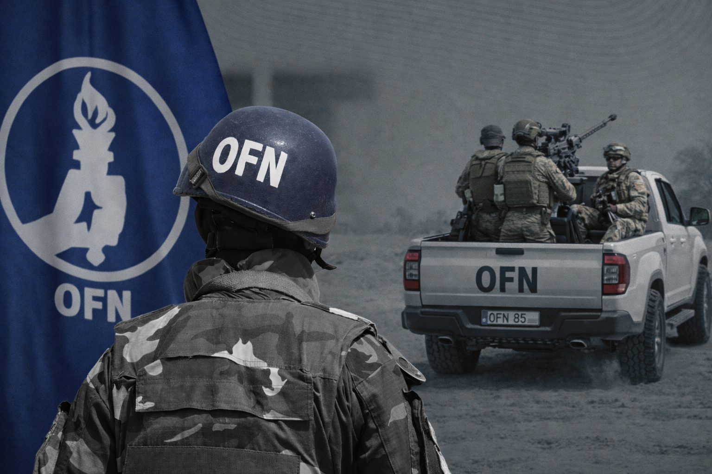
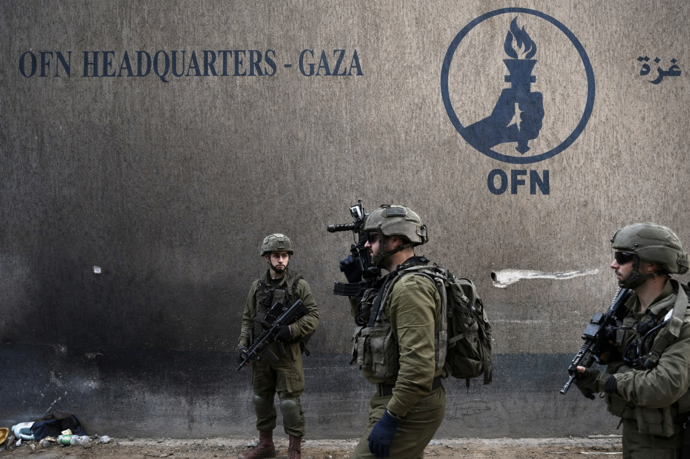

The Organisation safeguards constitutional legitimacy and collective security obligations as defined by its charter. Member States remain sovereign and equal; cooperation is structured, voluntary, and mission-specific.
Sites shown here include OFN-administered facilities where permitted, and partner-hosted relays where accepted.


Click a marker or country for a dossier. Use filters to spotlight statuses. Live overlays can show day/night shading and stylized traffic. Sounds can be enabled by adding MP3 files.